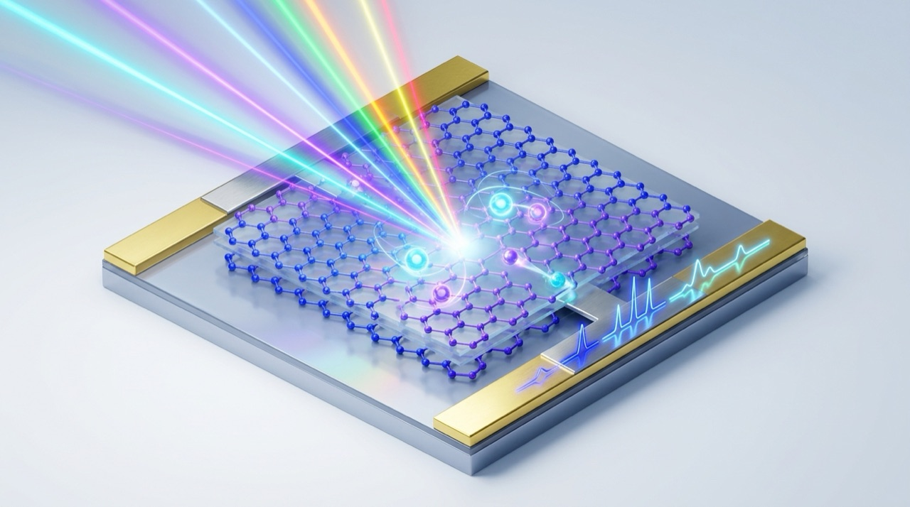

Optoelectronics
Harnessing strong light–matter interaction in atomically thin semiconductors.

Why It Matters
Despite being less than a nanometer thick, 2D semiconductors absorb light extraordinarily strongly and possess tunable bandgaps spanning ultraviolet, visible, and infrared wavelengths. This makes them ideal for ultra-compact photodetectors, artificial retina chips, and optical communication devices.
ONE 1ab Research Focus
- High-responsivity, fast-response 2D photodetectors across UV–Vis–NIR spectra
- In-sensor visual computing and optoelectronic synaptic devices (artificial retina)
- Self-powered photovoltaic and van der Waals p–n heterojunction optoelectronics
How It Works
- Direct Bandgap Absorption: Monolayer TMDs exhibit strong excitonic light absorption, converting incoming photons efficiently into electron–hole pairs.
- Built-in Heterojunction Fields: Stacking p-type and n-type 2D layers creates sharp built-in electric fields that separate photocarriers rapidly for fast, low-noise detection.
- Optoelectronic Memory: Controlled charge trapping enables devices to both sense light and remember optical patterns like the human retina.
Real-World Applications
Artificial Retina
Bio-inspired vision sensors that preprocess images at the pixel
LiDAR & Optical Comms
Ultra-fast, compact light receivers for autonomous systems
Bio-Optical Imaging
Ultra-thin, flexible optical detectors for medical diagnostics